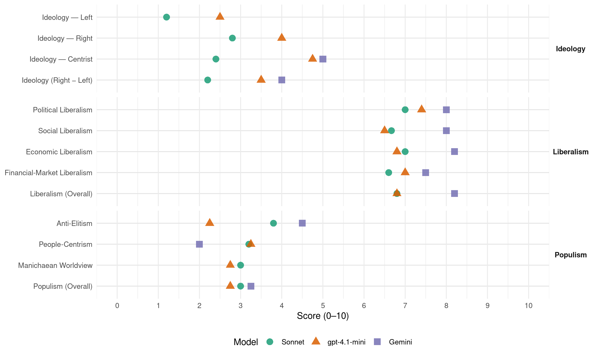

PP (Spain, 1996)
manifesto_id 33610_199603
Get full text: This site shows derived annotations and short verbatim quotes only. The full manifesto text is © Manifesto Project / WZB — obtain it via manifesto-project.wzb.eu using the manifesto_id above.
Headline scores
| Dimension | Sonnet | gpt-4.1-mini | Gemini |
|---|---|---|---|
| Populism (Overall) | 3.0 | 2.8 | 3.2 |
| Anti-Elitism | 3.8 | 2.2 | 4.5 |
| People-Centrism | 3.2 | 3.2 | 2.0 |
| Manichaean Worldview | 3.0 | 2.8 | – |
| Ideology (Right − Left) | 2.2 | 3.5 | 4.0 |
| Liberalism (Overall) | 6.8 | 6.8 | 8.2 |
| Political Liberalism | 7.0 | 7.4 | 8.0 |
| Social Liberalism | 6.7 | 6.5 | 8.0 |
| Economic Liberalism | 7.0 | 6.8 | 8.2 |
| Financial-Market Liberalism | 6.6 | 7.0 | 7.5 |
Evidence per dimension
Economic Liberalism
Gemini · score 9.0 · verified · chunk 1
“reformas estructurales necesarias para modernizar nuestro tejido productivo”
Asimismo, el Gobierno acometerá las reformas estructurales necesarias para modernizar nuestro tejido productivo y potenciar la eficacia de nuestros mercados.
Gemini · score 8.0 · verified · chunk 2
“potenciar la competitividad del sector basada en la calidad”
potenciar la competitividad del sector basada en la calidad, denominaciones de origen y en la promoción
Gemini · score 8.0 · verified · chunk 3
“respete la libre iniciativa social y abandone las posiciones de monopolio”
es necesario que la Administración del Estado respete la libre iniciativa social y abandone las posiciones de monopolio o intervencionismo excesivo.
Gemini · score 8.0 · verified · chunk 4
“garantizar el libre acceso a los mercados y favorecer el libre comercio”
nación económicamente desarrollada necesita garantizar el libre acceso a los mercados y favorecer el libre comercio, preferentemente en un marco
Gemini · score 8.0 · verified · chunk 5
“Privatización paulatina de aquellas empresas”
El PP propone lo siguiente: - Privatización paulatina de aquellas empresas que presenten perspectivas de viabilidad económica
gpt-4.1-mini · score 8.0 · verified · chunk 1
“reformas estructurales necesarias para modernizar nuestro tejido productivo”
Asimismo, el Gobierno acometerá las reformas estructurales necesarias para modernizar nuestro tejido productivo y potenciar la eficacia de nuestros mercados.
gpt-4.1-mini · score 6.0 · verified · chunk 2
“la reducción del déficit público y de la inflación son objetivos ineludibles”
Nuestra vocación es entrar en la Tercera Fase de la Unión Económica y Monetaria Europea en los plazos establecidos, lo que supone cumplir los criterios de convergencia contenidos en el Tratado de la Unión. La reducción del déficit público y de la inflación son objetivos ineludibles para conseguir el aumento de nuestra competitividad internacional y consolidar la recuperación económica y la creación de empleo.
gpt-4.1-mini · score 7.0 · verified · chunk 3
“El PP impulsará medidas que ayuden a conciliar la vida familiar y profesional”
El PP impulsará medidas que ayuden a conciliar la vida familiar y profesional (horario Laboral, permisos de maternidad y guardería). Realizar programas específicos de educación compensatoria para las mujeres que precisen aumentar su nivel educativo con objeto de impulsar su participación social, singularmente en el ámbito rural y para quienes habiendo abandonado el mundo laboral vuelvan a él.
gpt-4.1-mini · score 7.0 · verified · chunk 4
“la economía es hoy el principal contenido de la diplomacia”
Desde otra perspectiva, es imprescindible asumir que la economía es hoy el principal contenido de la diplomacia y de las relaciones internacionales, por lo que el Gobierno del PP enfocará prioritariamente su política exterior hacia la más eficaz defensa de los intereses económicos españoles.
gpt-4.1-mini · score 6.0 · verified · chunk 5
“Favorecer la demanda interna de bienes de defensa mediante la máxima nacionalización posible de las adquisiciones de defensa”
…La industria de defensa está atravesando en nuestro país por una grave crisis que pone en riesgo la propia supervivencia de este sector, esencial en términos estratégicos para la seguridad nacional y muy importante desde el punto de vista tecnológico, industrial y económico. La industria de defensa requiere, en consecuencia, la puesta en marcha de una serie de medidas concretas y eficaces, coordinadas entre el Ministerio de Defensa y el de Industria y Energía. El PP propone lo siguiente: - Favorecer la demanda interna de bienes de defensa mediante la máxima nacionalización posible de las adquisiciones de defensa, intentando en todo momento armonizar las capacidades de nuestro sector industrial y los requerimientos operativos de nuestras Fuerzas Armadas…
Sonnet · score 8.0 · verified · chunk 1
“revisar las restricciones a la competencia y otras regulaciones”
hay que revisar las restricciones a la competencia y otras regulaciones que entorpecen un funcionamiento eficaz de los principales sectores productivos
Sonnet · score 7.0 · verified · chunk 2
“competitividad del sector basada en la calidad”
Fijar nuevas orientaciones en orden a potenciar la competitividad del sector basada en la calidad, denominaciones de origen y en la promoción de consumo
Sonnet · score 7.0 · verified · chunk 3
“respete la libre iniciativa social y abandone las posiciones de monopolio”
es necesario que la Administración del Estado respete la libre iniciativa social y abandone las posiciones de monopolio o intervencionismo excesivo.
Sonnet · score 7.0 · verified · chunk 4
“libre acceso a los mercados y favorecer el libre comercio”
como nación económicamente desarrollada necesita garantizar el libre acceso a los mercados y favorecer el libre comercio, preferentemente en un marco multilateral
Sonnet · score 6.0 · verified · chunk 5
“Privatización paulatina de aquellas empresas”
Privatización paulatina de aquellas empresas que presenten perspectivas de viabilidad económica a medio plazo, teniendo en cuenta el carácter estratégico
Financial-Market Liberalism
Gemini · score 9.0 · verified · chunk 1
“profundizando en el proceso liberalizador del sistema financiero”
obliga a seguir profundizando en el proceso liberalizador del sistema financiero español, a la vez que se incrementa la confianza
Gemini · score 7.0 · verified · chunk 2
“créditos favorables a las entidades dedicadas a actividades”
Facilitar créditos favorables a las entidades dedicadas a actividades de interés cultural, contemplando la posibilidad
Gemini · score 7.0 · verified · chunk 3
“mejorar los recursos del sistema financiero dedicados a la vivienda”
Aplicará una política tendente a mejorar los recursos del sistema financiero dedicados a la vivienda, garantizando las consignaciones presupuestarias
Gemini · score 7.0 · verified · chunk 4
“fórmulas complementarias de pensiones que incentiven el ahorro individual”
Fomento decidido de fórmulas complementarias de pensiones que incentiven el ahorro individual y sirvan de apoyo a la inversión
gpt-4.1-mini · score 7.0 · verified · chunk 1
“reforma del sistema financiero y supervisión de entidades y mercados financieros”
4.1. REFORMA DEL SISTEMA FINANCIERO El reto que representan los nuevos procesos financieros y la implantación de un mercado financiero único obliga a seguir profundizando en el proceso liberalizador del sistema financiero español… 4.2. REFORMA DEL SISTEMA DE SUPERVISIÓN DE ENTIDADES Y MERCADOS FINANCIEROS
Sonnet · score 8.0 · verified · chunk 1
“proceso liberalizador del sistema financiero español”
obliga a seguir profundizando en el proceso liberalizador del sistema financiero español, a la vez que se incrementa la confianza que debe generar y su credibilidad, transparencia y eficiencia.
Sonnet · score 7.0 · verified · chunk 2
“crisis financiera que afectó seriamente a la peseta”
la reciente crisis financiera que afectó seriamente a la peseta, son lecciones que no pueden olvidarse. La forma de evitar la crisis financiera es fortalecer las economías europeas
Sonnet · score 6.0 · verified · chunk 3
“potenciando el mercado hipotecario”
Aplicará una política tendente a mejorar los recursos del sistema financiero dedicados a la vivienda, garantizando las consignaciones presupuestarias oportunas y potenciando el mercado hipotecario
Sonnet · score 6.0 · verified · chunk 4
“Fomento decidido de fórmulas complementarias de pensiones”
Fomento decidido de fórmulas complementarias de pensiones que incentiven el ahorro individual y sirvan de apoyo a la inversión
Sonnet · score 6.0 · verified · chunk 5
“mayor transparencia y competencia entre las empresas”
Mejora del sistema de adquisición y contratación del Ministerio de Defensa para favorecer mayor transparencia y competencia entre las empresas del sector
Political Liberalism
Gemini · score 8.0 · verified · chunk 1
“Estatuto del contribuyente sistematizará los derechos”
Un Estatuto del contribuyente sistematizará los derechos y obligaciones de los ciudadanos con la Administración Tributaria
Gemini · score 9.0 · verified · chunk 2
“fortalecer la democracia es un aspecto esencial”
transparencia. Fortalecer la democracia es un aspecto esencial de este proyecto. Un compromiso irrenunciable
Gemini · score 8.0 · verified · chunk 3
“existencia de unos medios de comunicación libres”
La democracia es ante todo un régimen de opinión pública que se define por la existencia de unos medios de comunicación libres, sea cual sea su titularidad
Gemini · score 8.0 · verified · chunk 4
“respeto a las libertades fundamentales de la persona y en el Estado de Derecho”
nación democrática, sistema político basado en el respeto a las libertades fundamentales de la persona y en el Estado de Derecho. La política exterior
Gemini · score 7.0 · verified · chunk 5
“sometidos al mismo mecanismo de control”
Los gastos militares deberán en el futuro estar sometidos al mismo mecanismo de control que el resto de los gastos del Estado.
gpt-4.1-mini · score 7.0 · verified · chunk 1
“la democracia, derechos, elecciones, cortes, parlamento”
La política del Gobierno del PP se basará en el diálogo. A tal fin promoverá con los agentes sociales un Acuerdo Social para el empleo. El Gobierno del PP con el dialogo social, como instrumento fundamental, desarrollará un marco estable que permita crear empleo.
gpt-4.1-mini · score 7.0 · verified · chunk 2
“La Constitución Española de 1978, al consagrar un Estado Social y Democrático de Derecho”
La Constitución Española de 1978, al consagrar un Estado Social y Democrático de Derecho, estableció las pautas fundamentales de un nuevo modelo de Justicia que, sin embargo, no ha sido desarrollado en plenitud hasta el momento. Los gobiernos socialistas han perdido unos años cruciales para la modernización de la Justicia y, con su errática política, basada primero en reformas con fines claramente sectarios…
gpt-4.1-mini · score 8.0 · verified · chunk 3
“La democracia es ante todo un régimen de opinión pública que se define por la existencia de unos medios de comunicación libres”
La democracia es ante todo un régimen de opinión pública que se define por la existencia de unos medios de comunicación libres, sea cual sea su titularidad y régimen jurídico. El Gobierno socialista ha convertido los medios de titularidad pública en su patrimonio privado y ha llevado su manipulación hasta límites intolerables en una sociedad democrática.
gpt-4.1-mini · score 8.0 · verified · chunk 4
“garantizará igual accesibilidad al sistema sanitario a todos los ciudadanos”
Un sistema equitativo. Se garantizará igual accesibilidad al sistema sanitario a todos los ciudadanos y a la población. Se corregirán las considerables desigualdades regionales existentes en la dotación de recursos y en su financiación.
gpt-4.1-mini · score 7.0 · verified · chunk 5
“los gastos militares deberán en el futuro estar sometidos al mismo mecanismo de control que el resto de los gastos del Estado”
…Desburocratización del gasto en defensa. Es imprescindible proceder a una transferencia de recursos desde los programas administrativos a los programas operativos de los tres ejércitos. Para lograr este objetivo tendrá especial importancia el plan de reducción, y modernización del Órgano Central de la Defensa ya mencionado. - Reforzamiento de los mecanismos de intervención. Los gastos militares deberán en el futuro estar sometidos al mismo mecanismo de control que el resto de los gastos del Estado. - Una estructura de programas más competitiva…
Sonnet · score 6.0 · verified · chunk 1
“control parlamentario de la ejecución de los Presupuestos”
Se reforzará el control parlamentario de la ejecución de los Presupuestos Generales del Estado mediante la creación de una Oficina Presupuestaria en el Congreso de los Diputados.
Sonnet · score 8.0 · verified · chunk 2
“democracia y el Estado de Derecho”
el PP impulsará todas las acciones y medidas necesarias para que la democracia y el Estado de Derecho sean de nuevo realidades vivas percibidas por los españoles
Sonnet · score 8.0 · verified · chunk 3
“democracia libre, para lo que deberá rectificar su actividad”
Servir de vehículo de información y formación de la opinión pública y auxiliar la participación política, en el marco plural de una democracia libre, para lo que deberá rectificar su actividad
Sonnet · score 7.0 · verified · chunk 4
“democracia, en el respeto a las normas del Derecho Internacional”
consecución de un orden internacional basado en la paz, en la libertad, en la democracia, en el respeto a las normas del Derecho Internacional
Sonnet · score 6.0 · verified · chunk 5
“profunda reforma por ley de nuestros servicios”
el PP considera que es imprescindible una profunda reforma por ley de nuestros servicios de información
Liberalism (Overall)
Gemini · score 9.0 · verified · chunk 1
“profundizando en el proceso liberalizador del sistema financiero”
obliga a seguir profundizando en el proceso liberalizador del sistema financiero español, a la vez que se incrementa la confianza
Gemini · score 8.0 · verified · chunk 2
“fortalecer la democracia es un aspecto esencial”
transparencia. Fortalecer la democracia es un aspecto esencial de este proyecto. Un compromiso irrenunciable
Gemini · score 8.0 · verified · chunk 3
“respete la libre iniciativa social y abandone las posiciones de monopolio”
es necesario que la Administración del Estado respete la libre iniciativa social y abandone las posiciones de monopolio o intervencionismo excesivo.
Gemini · score 8.0 · verified · chunk 4
“garantizar el libre acceso a los mercados y favorecer el libre comercio”
nación económicamente desarrollada necesita garantizar el libre acceso a los mercados y favorecer el libre comercio, preferentemente en un marco
Gemini · score 8.0 · verified · chunk 5
“Privatización paulatina de aquellas empresas”
El PP propone lo siguiente: - Privatización paulatina de aquellas empresas que presenten perspectivas de viabilidad económica
gpt-4.1-mini · score 7.0 · verified · chunk 1
“reformas estructurales necesarias para modernizar nuestro tejido productivo”
Asimismo, el Gobierno acometerá las reformas estructurales necesarias para modernizar nuestro tejido productivo y potenciar la eficacia de nuestros mercados.
gpt-4.1-mini · score 6.0 · verified · chunk 2
“La Constitución Española de 1978, al consagrar un Estado Social y Democrático de Derecho”
La Constitución Española de 1978, al consagrar un Estado Social y Democrático de Derecho, estableció las pautas fundamentales de un nuevo modelo de Justicia que, sin embargo, no ha sido desarrollado en plenitud hasta el momento. Los gobiernos socialistas han perdido unos años cruciales para la modernización de la Justicia y, con su errática política, basada primero en reformas con fines claramente sectarios…
gpt-4.1-mini · score 7.0 · verified · chunk 3
“La democracia es ante todo un régimen de opinión pública que se define por la existencia de unos medios de comunicación libres”
La democracia es ante todo un régimen de opinión pública que se define por la existencia de unos medios de comunicación libres, sea cual sea su titularidad y régimen jurídico. El Gobierno socialista ha convertido los medios de titularidad pública en su patrimonio privado y ha llevado su manipulación hasta límites intolerables en una sociedad democrática.
gpt-4.1-mini · score 7.0 · verified · chunk 4
“garantizará igual accesibilidad al sistema sanitario a todos los ciudadanos”
Un sistema equitativo. Se garantizará igual accesibilidad al sistema sanitario a todos los ciudadanos y a la población. Se corregirán las considerables desigualdades regionales existentes en la dotación de recursos y en su financiación.
gpt-4.1-mini · score 7.0 · verified · chunk 5
“Los gastos militares deberán en el futuro estar sometidos al mismo mecanismo de control que el resto de los gastos del Estado”
…Desburocratización del gasto en defensa. Es imprescindible proceder a una transferencia de recursos desde los programas administrativos a los programas operativos de los tres ejércitos. Para lograr este objetivo tendrá especial importancia el plan de reducción, y modernización del Órgano Central de la Defensa ya mencionado. - Reforzamiento de los mecanismos de intervención. Los gastos militares deberán en el futuro estar sometidos al mismo mecanismo de control que el resto de los gastos del Estado. - Una estructura de programas más competitiva…
Sonnet · score 7.0 · verified · chunk 1
“liberalización progresiva del sector y a la reducción drástica del intervencionismo”
Las medidas propuestas por el PP van encaminadas - además de incrementar la transparencia - a la liberalización progresiva del sector y a la reducción drástica del intervencionismo existente.
Sonnet · score 7.0 · verified · chunk 2
“gran mercado interior desarrolle su capacidad”
La estabilidad de los tipos de cambio es conveniente para que el gran mercado interior desarrolle su capacidad y para que se alejen definitivamente las tentaciones proteccionistas en Europa
Sonnet · score 7.0 · verified · chunk 3
“respete la libre iniciativa social y abandone las posiciones de monopolio”
es necesario que la Administración del Estado respete la libre iniciativa social y abandone las posiciones de monopolio o intervencionismo excesivo.
Sonnet · score 7.0 · verified · chunk 4
“libre acceso a los mercados y favorecer el libre comercio”
como nación económicamente desarrollada necesita garantizar el libre acceso a los mercados y favorecer el libre comercio, preferentemente en un marco multilateral
Sonnet · score 6.0 · verified · chunk 5
“Privatización paulatina de aquellas empresas”
Privatización paulatina de aquellas empresas que presenten perspectivas de viabilidad económica a medio plazo
Anti-Elitism
Gemini · score 3.0 · verified · chunk 1
“fracaso de la política económica de los gobiernos socialistas”
El paro, principal preocupación de los españoles, es el más claro exponente del fracaso de la política económica de los gobiernos socialistas.
Gemini · score 6.0 · verified · chunk 2
“prejuicios ideológicos del socialismo, su concepción dirigista”
padece serias patologías. Los prejuicios ideológicos del socialismo, su concepción dirigista de la enseñanza, la gestión burocratizada
Gemini · score 6.0 · verified · chunk 3
“ha convertido los medios de titularidad pública en su patrimonio privado”
El Gobierno socialista ha convertido los medios de titularidad pública en su patrimonio privado y ha llevado su manipulación hasta límites intolerables
Gemini · score 3.0 · verified · chunk 4
“fracaso del modelo socialista de bienestar”
pago de subsidios es la prueba del fracaso del modelo socialista de bienestar. La protección económica
gpt-4.1-mini · score 2.0 · verified · chunk 1
“la absoluta falta de credibilidad en los últimos años de su política”
el mayor de los perjuicios ocasionados a la economía española por el socialismo, ha sido la absoluta falta de credibilidad en los últimos años de su política, frente a los agentes económicos tanto nacionales como extranjeros.
gpt-4.1-mini · score 2.0 · verified · chunk 2
“el gobierno socialista y su mayoría parlamentaria: - Han bloqueado con frecuencia la función de control del Parlamento”
…han producido un preocupante debilitamiento del Estado de Derecho. El principio de la mayoría se ha interpretado y aplicado abusivamente, al pretender que todo lo que el poder dispusiera fuese legítimo. El gobierno socialista y su mayoría parlamentaria: - Han bloqueado con frecuencia la función de control del Parlamento, oponiéndose por ejemplo a suministrar información o a crear comisiones de investigación. - Han manipulado la televisión estatal en su beneficio y en el de su partido vulnerando el Estatuto de RTVE y el art. 20 de la Constitución…
gpt-4.1-mini · score 3.0 · verified · chunk 3
“El gobierno socialista ha convertido los medios de titularidad pública en su patrimonio privado”
La democracia es ante todo un régimen de opinión pública que se define por la existencia de unos medios de comunicación libres, sea cual sea su titularidad y régimen jurídico. El Gobierno socialista ha convertido los medios de titularidad pública en su patrimonio privado y ha llevado su manipulación hasta límites intolerables en una sociedad democrática.
gpt-4.1-mini · score 2.0 · verified · chunk 4
“fracaso del modelo socialista de bienestar”
El volumen de recursos destinado al pago de subsidios es la prueba del fracaso del modelo socialista de bienestar. La protección económica de los desempleados debe acompañarse con el desarrollo de políticas activas de formación y colocación.
Sonnet · score 4.0 · verified · chunk 1
“fracaso de la política económica de los gobiernos socialistas”
El paro, principal preocupación de los españoles, es el más claro exponente del fracaso de la política económica de los gobiernos socialistas.
Sonnet · score 5.0 · verified · chunk 2
“gobierno socialista y su mayoría parlamentaria”
El Partido Socialista incluso pretendió restringir de manera inconstitucional… el gobierno socialista y su mayoría parlamentaria: - Han bloqueado con frecuencia la función de control del Parlamento
Sonnet · score 4.0 · verified · chunk 3
“los socialistas han suprimido los instrumentos de control”
Si en España se ha producido es porque los socialistas han suprimido los instrumentos de control y los mecanismos de vigilancia que preservan a las sociedades democráticas del abuso de poder.
Sonnet · score 3.0 · verified · chunk 4
“responde a un modelo socialista, rígido, burocrático”
Su gestión es ineficiente porque responde a un modelo socialista, rígido, burocrático, sin incentivos internos ni externos
Sonnet · score 3.0 · verified · chunk 5
“doce años de gobierno socialista”
El presupuesto de defensa ha seguido una doble tendencia en los doce años de gobierno socialista. Por un lado, el esfuerzo económico en la defensa se ha reducido a la mitad
Ideology — Centrist
Gemini · score 5.0 · verified · chunk 2
“prejuicios ideológicos del socialismo, su concepción dirigista”
padece serias patologías. Los prejuicios ideológicos del socialismo, su concepción dirigista de la enseñanza, la gestión burocratizada
Gemini · score 5.0 · verified · chunk 3
“ha convertido los medios de titularidad pública en su patrimonio privado”
El Gobierno socialista ha convertido los medios de titularidad pública en su patrimonio privado y ha llevado su manipulación hasta límites intolerables
gpt-4.1-mini · score 5.0 · verified · chunk 1
“la competitividad y la solidaridad son las dos caras de un mismo modelo”
El modelo social del PP descansa en la convicción de que el progreso económico y el progreso social son interdependientes, es decir, la competitividad y la solidaridad son las dos caras de un mismo modelo de desarrollo de los países europeos más avanzados.
gpt-4.1-mini · score 4.0 · verified · chunk 2
“resultado de la voluntad del pueblo español y del impulso de la Corona”
La restauración del régimen democrático fue una gran obra, resultado de la voluntad del pueblo español y del impulso de la Corona con la colaboración del más amplio abanico del pluralismo político español. Culminó con la Constitución de 1978, símbolo de la concordia nacional. En los años de la transición se pusieron los cimientos del Estado del Derecho…
gpt-4.1-mini · score 5.0 · verified · chunk 3
“La política del Partido Popular se centrará en los siguientes aspectos: consenso político y cooperación”
Las propuestas de política autonómica del Partido Popular, inspiradas en los principios de consenso político y de cooperación entre Estado, Comunidades Autónomas y Corporaciones Locales - tal y como ha sido desarrollado por el Tribunal Constitucional - persiguen la configuración de un marco estable para la España de las Autonomías.
gpt-4.1-mini · score 5.0 · verified · chunk 4
“los ciudadanos españoles son la única razón de ser”
Los ciudadanos españoles son la única razón de ser del Sistema Nacional de Salud. Por ello el PP quiere recuperar los principios de universalidad, gratuidad y solidaridad que la Sanidad pública ha ido perdiendo en los últimos años.
Sonnet · score 3.0 · verified · chunk 1
“programa económico claro, coherente y realizable”
El PP se presenta ante los ciudadanos españoles con un programa económico claro, coherente y realizable.
Sonnet · score 3.0 · verified · chunk 2
“revitalización democrática que el PP propone”
Todo ello ha producido un deterioro institucional que hay que superar mediante la revitalización democrática que el PP propone
Sonnet · score 2.0 · verified · chunk 3
“amplio consenso y cooperación”
inspirado por los principios de amplio consenso y cooperación, la política del Partido Popular se centrará en los siguientes aspectos
Sonnet · score 2.0 · verified · chunk 4
“consenso social y parlamentario más amplio posible”
Búsqueda del consenso social y parlamentario más amplio posible para que la política europea de España tenga un sólido respaldo
Sonnet · score 2.0 · verified · chunk 5
“racionalización del presupuesto de defensa”
A corto plazo sólo cabe proceder a una racionalización del presupuesto de defensa que permita una utilización más eficaz y eficiente de los recursos disponibles
Ideology — Left
gpt-4.1-mini · score 3.0 · verified · chunk 1
“la distribución equitativa de la renta”
La construcción de una economía fuerte debe cimentarse en una solidaridad activa que facilite la vertebración de la sociedad española a través de la garantía de ciertos niveles de bienestar, la igualdad de oportunidades y la distribución equitativa de la renta.
gpt-4.1-mini · score 2.0 · verified · chunk 2
“han propiciado leyes gravemente restrictivas de las libertades fundamentales”
…han utilizado instituciones y medios públicos para descalificar a la oposición y para negarle el carácter de alternativa. - Han propiciado leyes gravemente restrictivas de las libertades fundamentales, como la que debilita la inviolabilidad del domicilio y autoriza la patada en la puerta o la llamada retención gubernativa. Todo ello ha producido un deterioro institucional que hay que superar mediante la revitalización democrática que el PP propone.
gpt-4.1-mini · score 2.0 · verified · chunk 3
“El gobierno socialista y su mayoría parlamentaria han interpretado el control del gasto público como un estorbo que había que suprimir”
La corrupción es el peor de los males que puede sufrir una democracia. Si en España se ha producido es porque los socialistas han suprimido los instrumentos de control y los mecanismos de vigilancia que preservan a las sociedades democráticas del abuso de poder. El gobierno socialista y su mayoría parlamentaria han interpretado el control del gasto público como un estorbo que había que suprimir.
gpt-4.1-mini · score 3.0 · verified · chunk 4
“fracaso del modelo socialista de bienestar”
El volumen de recursos destinado al pago de subsidios es la prueba del fracaso del modelo socialista de bienestar. La protección económica de los desempleados debe acompañarse con el desarrollo de políticas activas de formación y colocación.
Sonnet · score 1.0 · verified · chunk 1
“distribución equitativa de la renta”
una política impositiva respetuosa con el principio de equidad… distribución equitativa de la renta, objetivo al que debe contribuir la acción pública
Sonnet · score 1.0 · verified · chunk 2
“prejuicios socialistas contra la iniciativa privada”
La combinación de los prejuicios socialistas contra la iniciativa privada o social, su vocación controladora y la obsesión recaudadora de Hacienda
Sonnet · score 1.0 · verified · chunk 3
“libre iniciativa social y abandone las posiciones de monopolio”
es necesario que la Administración del Estado respete la libre iniciativa social y abandone las posiciones de monopolio o intervencionismo excesivo.
Sonnet · score 2.0 · verified · chunk 4
“Reducción progresiva de las cotizaciones”
Reducción progresiva de las cotizaciones a la Seguridad Social como elemento dinamizador del empleo
Sonnet · score 1.0 · verified · chunk 5
“salvaguarda de los puestos de trabajo”
el necesario control nacional del capital y la salvaguarda de los puestos de trabajo
Ideology (Right − Left)
Gemini · score 3.0 · verified · chunk 2
“prejuicios ideológicos del socialismo, su concepción dirigista”
padece serias patologías. Los prejuicios ideológicos del socialismo, su concepción dirigista de la enseñanza, la gestión burocratizada
Gemini · score 5.0 · verified · chunk 3
“ha convertido los medios de titularidad pública en su patrimonio privado”
El Gobierno socialista ha convertido los medios de titularidad pública en su patrimonio privado y ha llevado su manipulación hasta límites intolerables
gpt-4.1-mini · score 3.0 · verified · chunk 1
“la competitividad y la solidaridad son las dos caras de un mismo modelo”
El modelo social del PP descansa en la convicción de que el progreso económico y el progreso social son interdependientes, es decir, la competitividad y la solidaridad son las dos caras de un mismo modelo de desarrollo de los países europeos más avanzados.
gpt-4.1-mini · score 3.0 · verified · chunk 2
“el gobierno socialista y su mayoría parlamentaria: - Han bloqueado con frecuencia la función de control del Parlamento”
…han producido un preocupante debilitamiento del Estado de Derecho. El principio de la mayoría se ha interpretado y aplicado abusivamente, al pretender que todo lo que el poder dispusiera fuese legítimo. El gobierno socialista y su mayoría parlamentaria: - Han bloqueado con frecuencia la función de control del Parlamento, oponiéndose por ejemplo a suministrar información o a crear comisiones de investigación. - Han manipulado la televisión estatal en su beneficio y en el de su partido vulnerando el Estatuto de RTVE y el art. 20 de la Constitución…
gpt-4.1-mini · score 4.0 · verified · chunk 3
“El Gobierno socialista ha convertido los medios de titularidad pública en su patrimonio privado”
La democracia es ante todo un régimen de opinión pública que se define por la existencia de unos medios de comunicación libres, sea cual sea su titularidad y régimen jurídico. El Gobierno socialista ha convertido los medios de titularidad pública en su patrimonio privado y ha llevado su manipulación hasta límites intolerables en una sociedad democrática.
gpt-4.1-mini · score 4.0 · verified · chunk 4
“fracaso del modelo socialista de bienestar”
El volumen de recursos destinado al pago de subsidios es la prueba del fracaso del modelo socialista de bienestar. La protección económica de los desempleados debe acompañarse con el desarrollo de políticas activas de formación y colocación.
Sonnet · score 2.0 · verified · chunk 1
“fracaso de la política económica de los gobiernos socialistas”
El paro, principal preocupación de los españoles, es el más claro exponente del fracaso de la política económica de los gobiernos socialistas.
Sonnet · score 2.0 · verified · chunk 2
“fracaso del gobierno socialista”
tras el fracaso del gobierno socialista que nos ha llevado a no cumplir ninguno de los criterios de convergencia
Sonnet · score 2.0 · verified · chunk 3
“libre iniciativa social y abandone las posiciones de monopolio”
es necesario que la Administración del Estado respete la libre iniciativa social y abandone las posiciones de monopolio o intervencionismo excesivo.
Sonnet · score 3.0 · verified · chunk 4
“modelo socialista, rígido, burocrático”
Su gestión es ineficiente porque responde a un modelo socialista, rígido, burocrático, sin incentivos internos ni externos
Sonnet · score 2.0 · verified · chunk 5
“doce años de gobierno socialista”
El presupuesto de defensa ha seguido una doble tendencia en los doce años de gobierno socialista
Ideology — Right
gpt-4.1-mini · score 2.0 · verified · chunk 1
“defendiendo los intereses del campo español”
10. DEFENDIENDO LOS INTERESES DEL CAMPO ESPAÑOL En estos momentos, la agricultura y ganadería española se encuentran inmersas en una vertiginosa carrera de reformas y cambios de tal magnitud… El Gobierno del PP emprenderá una nueva política en defensa de este sector.
gpt-4.1-mini · score 6.0 · verified · chunk 3
“El PP propone una defensa activa del Estatuto de Autonomía del País Vasco y del Amejoramiento del Fuero de Navarra”
ETA pretende imponer en la sociedad española la convicción de que la única solución consiste en una nueva negociación política, entre la banda y el gobierno de España. Frente a ello, el PP propone una defensa activa del Estatuto de Autonomía del País Vasco y del Amejoramiento del Fuero de Navarra y la preservación y potenciación de los pactos de las fuerzas democráticas.
gpt-4.1-mini · score 4.0 · verified · chunk 4
“Extremará la persecución de las mafias organizadas que introducen y emplean a inmigrantes ilegales”
El Gobierno del PP: Extremará la persecución de las mafias organizadas que introducen y emplean a inmigrantes ilegales en España y aumentará los controles administrativos en aquellos sectores productivos que tradicionalmente utilizan inmigración ilegal.
Sonnet · score 2.0 · verified · chunk 1
“intereses del campo español”
DEFENDIENDO LOS INTERESES DEL CAMPO ESPAÑOL… el Gobierno del PP emprenderá una nueva política en defensa de este sector
Sonnet · score 2.0 · verified · chunk 2
“evitando los problemas de importaciones de cerdos negros del este”
estableciendo las ayudas y apoyos institucionales precisos y evitando así los problemas de importaciones de cerdos negros del este
Sonnet · score 3.0 · verified · chunk 3
“España es una gran realidad histórica”
España es una gran realidad histórica. Es una gran nación europea, pero también una realidad plural, pluricultural y plurilingüe.
Sonnet · score 4.0 · verified · chunk 4
“política de integración social de los inmigrantes”
El fenómeno de la inmigración en España obliga a la adopción de una política de integración social de los inmigrantes
Sonnet · score 3.0 · verified · chunk 5
“máxima nacionalización posible de las adquisiciones”
Favorecer la demanda interna de bienes de defensa mediante la máxima nacionalización posible de las adquisiciones de defensa
Manichaean Worldview
gpt-4.1-mini · score 2.0 · verified · chunk 1
“incompetencia de la política económica del gobierno socialista”
El déficit público y su corolario de aumento vertiginoso de la deuda pública constituyen otra prueba de la incompetencia de la política económica del gobierno socialista.
gpt-4.1-mini · score 3.0 · verified · chunk 2
“han propiciado leyes gravemente restrictivas de las libertades fundamentales”
…han utilizado instituciones y medios públicos para descalificar a la oposición y para negarle el carácter de alternativa. - Han propiciado leyes gravemente restrictivas de las libertades fundamentales, como la que debilita la inviolabilidad del domicilio y autoriza la patada en la puerta o la llamada retención gubernativa. Todo ello ha producido un deterioro institucional que hay que superar mediante la revitalización democrática que el PP propone.
gpt-4.1-mini · score 3.0 · verified · chunk 3
“ETA y el entramado de sus organizaciones satélites pasan por un momento de envalentonamiento y radicalización”
El terrorismo de ETA representa el elemento más perturbador de la convivencia en la sociedad española. Es imprescindible erradicarlo, movilizando todos los recursos legales y todas las energías morales, impugnando intelectual y dialécticamente todos sus respaldos y apoyos políticos y sociales, sin acostumbrarnos a convivir doloridamente con él. ETA y el entramado de sus organizaciones satélites pasan por un momento de envalentonamiento y radicalización.
gpt-4.1-mini · score 3.0 · verified · chunk 4
“la política exterior española se basará en la defensa de los derechos humanos”
España es, en primer término, una nación europea, con una adicional vocación atlántica. En segundo lugar, es una nación democrática… La política exterior española se basará en la defensa de los derechos humanos.
Sonnet · score 3.0 · verified · chunk 1
“absoluta falta de credibilidad en los últimos años”
Con todo, el mayor de los perjuicios ocasionados a la economía española por el socialismo, ha sido la absoluta falta de credibilidad en los últimos años de su política
Sonnet · score 4.0 · verified · chunk 2
“deterioro institucional que hay que superar”
Todo ello ha producido un deterioro institucional que hay que superar mediante la revitalización democrática que el PP propone
Sonnet · score 3.0 · verified · chunk 3
“La única raya divisoria ostensible es la que separa a los demócratas de los violentos”
Queremos recuperar el espíritu de la etapa 1986-1992 en la que la unidad de acción de los partidos democráticos vascos no tuvo fisuras. La única raya divisoria ostensible es la que separa a los demócratas de los violentos.
Sonnet · score 3.0 · verified · chunk 4
“política económica de los Gobiernos socialistas”
por causa de la política económica de los Gobiernos socialistas, España puede quedar descolgada en la fase más decisiva
Sonnet · score 2.0 · verified · chunk 5
“escándalos por ocuparse de cuestiones”
Los servicios de inteligencia se han visto envueltos en los últimos años en una serie de escándalos por ocuparse de cuestiones que están al margen de sus funciones legales
People-Centrism
Gemini · score 2.0 · verified · chunk 1
“satisfacer la demanda de los ciudadanos”
El PP propone la elaboración de un nuevo Plan de Carreteras que tendrá como objetivos: - Satisfacer la demanda de los ciudadanos, adaptando el nivel de servicio
gpt-4.1-mini · score 3.0 · verified · chunk 1
“la sociedad española a final del siglo XX”
La creación de empleo constituye, por tanto, el desafío más importante de la sociedad española a final del siglo XX. Para el Gobierno del PP la prioridad absoluta de su política económica y social será construir una economía fuerte y configurar un nuevo modelo de crecimiento económico para generar empleo y garantizar el bienestar social.
gpt-4.1-mini · score 3.0 · verified · chunk 2
“la voluntad del pueblo español y del impulso de la Corona con la colaboración del más amplio abanico del pluralismo político español”
La restauración del régimen democrático fue una gran obra, resultado de la voluntad del pueblo español y del impulso de la Corona con la colaboración del más amplio abanico del pluralismo político español. Culminó con la Constitución de 1978, símbolo de la concordia nacional. En los años de la transición se pusieron los cimientos del Estado del Derecho…
gpt-4.1-mini · score 4.0 · verified · chunk 3
“España es una realidad viva, una sustancia común y no la mera agregación de las diversidades”
El proyecto nacional que el Partido Popular impulsa parte de la convicción de que España es una realidad viva, una sustancia común y no la mera agregación de las diversidades que se reconocen en su seno. Por eso, este proyecto consiste tanto en un empeño de integración y cohesión como en una voluntad de reconocimiento de los elementos diferenciales y de las identidades culturales que constituyen el propio acervo histórico español.
gpt-4.1-mini · score 3.0 · verified · chunk 4
“los ciudadanos españoles son la única razón de ser”
Los ciudadanos españoles son la única razón de ser del Sistema Nacional de Salud. Por ello el PP quiere recuperar los principios de universalidad, gratuidad y solidaridad que la Sanidad pública ha ido perdiendo en los últimos años.
Sonnet · score 3.0 · verified · chunk 1
“principal preocupación de los españoles”
El paro, principal preocupación de los españoles, es el más claro exponente del fracaso de la política económica de los gobiernos socialistas.
Sonnet · score 4.0 · verified · chunk 2
“voluntad del pueblo español”
La restauración del régimen democrático fue una gran obra, resultado de la voluntad del pueblo español y del impulso de la Corona
Sonnet · score 3.0 · verified · chunk 3
“El PP es un partido al servicio del conjunto de la sociedad”
El PP es un partido al servicio del conjunto de la sociedad. Por ello la solidaridad es uno de los valores inspiradores de su acción política.
Sonnet · score 4.0 · verified · chunk 4
“Los ciudadanos españoles son la única razón”
Los ciudadanos españoles son la única razón de ser del Sistema Nacional de Salud. Por ello el PP quiere recuperar los principios
Sonnet · score 2.0 · verified · chunk 5
“elevado rechazo social”
Esta crisis tiene sus raíces en un elevado rechazo social y en una creciente inutilidad del reclutamiento forzoso para la defensa nacional
Populism (Overall)
Gemini · score 2.0 · verified · chunk 1
“fracaso de la política económica de los gobiernos socialistas”
El paro, principal preocupación de los españoles, es el más claro exponente del fracaso de la política económica de los gobiernos socialistas.
Gemini · score 3.0 · verified · chunk 2
“prejuicios ideológicos del socialismo, su concepción dirigista”
padece serias patologías. Los prejuicios ideológicos del socialismo, su concepción dirigista de la enseñanza, la gestión burocratizada
Gemini · score 6.0 · verified · chunk 3
“ha convertido los medios de titularidad pública en su patrimonio privado”
El Gobierno socialista ha convertido los medios de titularidad pública en su patrimonio privado y ha llevado su manipulación hasta límites intolerables
Gemini · score 2.0 · verified · chunk 4
“fracaso del modelo socialista de bienestar”
pago de subsidios es la prueba del fracaso del modelo socialista de bienestar. La protección económica
gpt-4.1-mini · score 2.0 · verified · chunk 1
“incompetencia de la política económica del gobierno socialista”
El déficit público y su corolario de aumento vertiginoso de la deuda pública constituyen otra prueba de la incompetencia de la política económica del gobierno socialista.
gpt-4.1-mini · score 3.0 · verified · chunk 2
“el gobierno socialista y su mayoría parlamentaria: - Han bloqueado con frecuencia la función de control del Parlamento”
…han producido un preocupante debilitamiento del Estado de Derecho. El principio de la mayoría se ha interpretado y aplicado abusivamente, al pretender que todo lo que el poder dispusiera fuese legítimo. El gobierno socialista y su mayoría parlamentaria: - Han bloqueado con frecuencia la función de control del Parlamento, oponiéndose por ejemplo a suministrar información o a crear comisiones de investigación. - Han manipulado la televisión estatal en su beneficio y en el de su partido vulnerando el Estatuto de RTVE y el art. 20 de la Constitución…
gpt-4.1-mini · score 3.0 · verified · chunk 3
“El Gobierno socialista ha convertido los medios de titularidad pública en su patrimonio privado”
La democracia es ante todo un régimen de opinión pública que se define por la existencia de unos medios de comunicación libres, sea cual sea su titularidad y régimen jurídico. El Gobierno socialista ha convertido los medios de titularidad pública en su patrimonio privado y ha llevado su manipulación hasta límites intolerables en una sociedad democrática.
gpt-4.1-mini · score 3.0 · verified · chunk 4
“fracaso del modelo socialista de bienestar”
El volumen de recursos destinado al pago de subsidios es la prueba del fracaso del modelo socialista de bienestar. La protección económica de los desempleados debe acompañarse con el desarrollo de políticas activas de formación y colocación.
Sonnet · score 3.0 · verified · chunk 1
“incompetencia de la política económica del gobierno socialista”
El déficit público y su corolario de aumento vertiginoso de la deuda pública constituyen otra prueba de la incompetencia de la política económica del gobierno socialista.
Sonnet · score 4.0 · verified · chunk 2
“fracaso del gobierno socialista”
tras el fracaso del gobierno socialista que nos ha llevado a no cumplir ninguno de los criterios de convergencia
Sonnet · score 3.0 · verified · chunk 3
“los socialistas han suprimido los instrumentos de control”
Si en España se ha producido es porque los socialistas han suprimido los instrumentos de control y los mecanismos de vigilancia que preservan a las sociedades democráticas del abuso de poder.
Sonnet · score 3.0 · verified · chunk 4
“fracaso del modelo socialista de bienestar”
El volumen de recursos destinado al pago de subsidios es la prueba del fracaso del modelo socialista de bienestar.
Sonnet · score 2.0 · verified · chunk 5
“deterioro de la estructura interna del mismo”
esas reducciones han ido acompañadas de un proceso de deterioro de la estructura interna del mismo, que ha hecho que cuanto menores eran los fondos disponibles
Social Liberalism